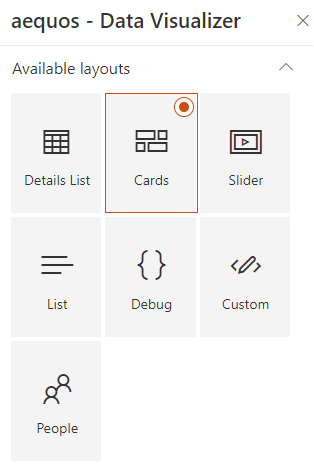
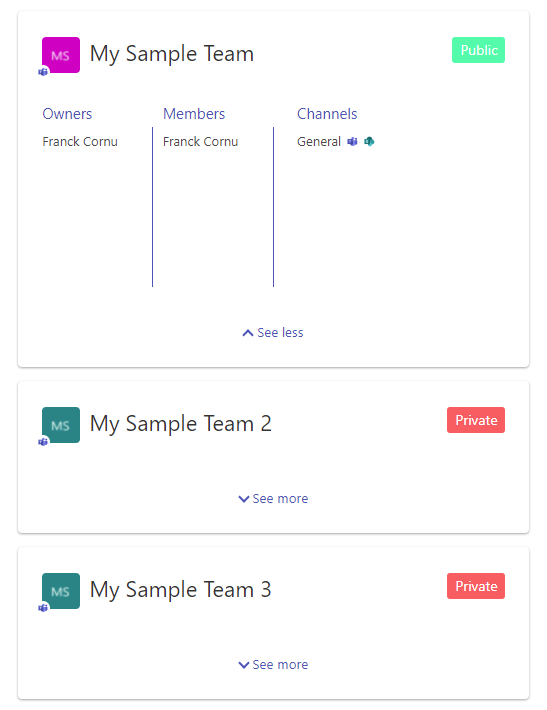
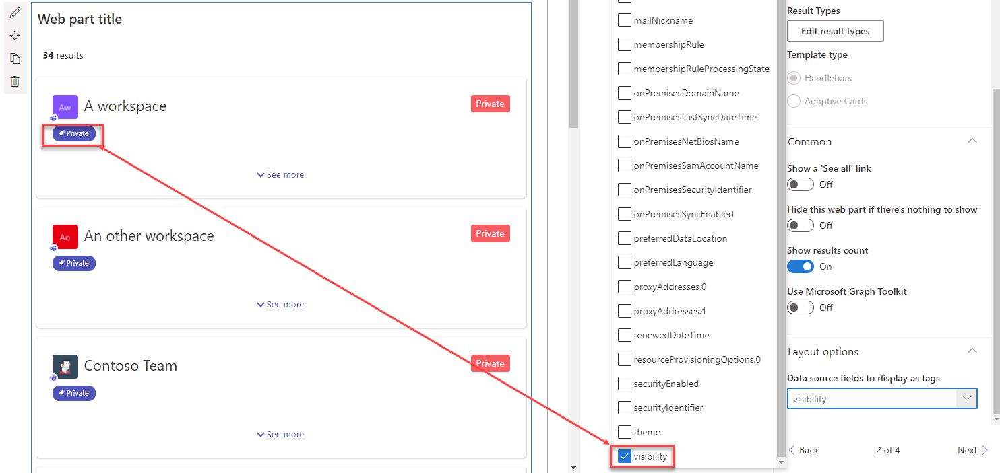
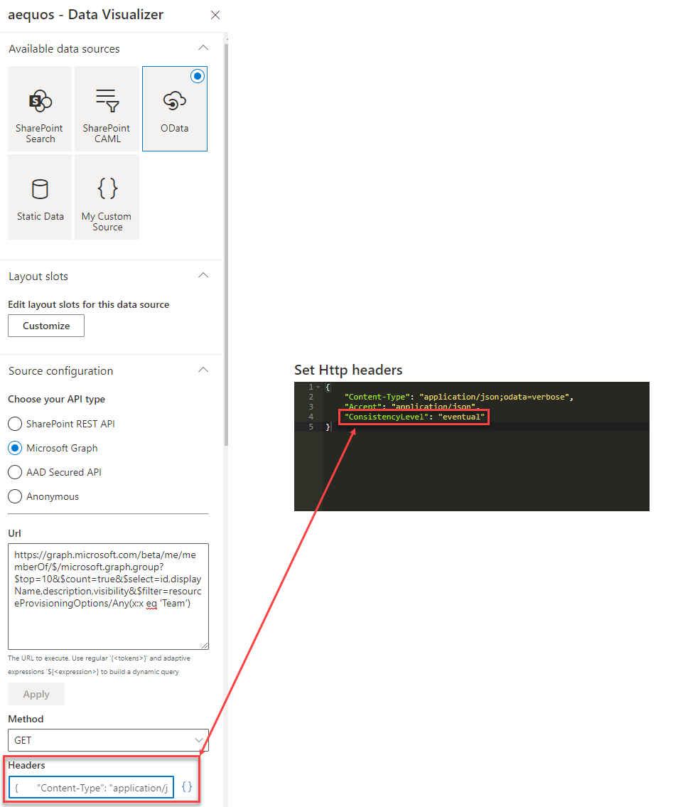

Layouts
Builtin layouts¶
By default, the following layouts are provided:

Be careful, when you switch the layout in the property pane, all the previous layout properties are lost. We do this to avoid polluting the Web Part property bag with multiple useless configurations.
Cards¶
The 'cards' layout allows you to display items as tiles, just like the native 'Highlighted Content' SharePoint Web Part.

| Setting | Description | Default value |
|---|---|---|
| Manage card fields | Allows you to define you own values for card placeholder fields. By default, the document card fields come with predefined mappings but you can set your own.
@root.theme to use theme colors (ex: @root.theme.palette.themePrimary) or @root.slots.<SlotName> to access slot value. If you don't set a value for those fields (i.e an empty value), they won't appear in the UI:
|
|
| Enable result preview | If enabled, display a callout with an interactive preview of the document based on the value specified value for the PreviewUrl current data source slot.
|
False |
| Show file icon | Hide or display the file icon for the result card. The file icon is determined using the FileType slot. |
True |
| Compact mode | Display cards as compact. | False |
| Preferred number of cards per row | Specifiy the preferred number of cards to display per row when the required width space is available. The Web Part will always adjust the number of possible tiles to display depending the available width. It means that if you set this value to '3' but you display the Web Part in small column, only 1 tile will be displayed. | 3. |


Details List¶
The 'details list' layout allows you to display items as a structured list, the same way as a SharePoint document library or list.

| Setting | Description | Default value |
|---|---|---|
| Manage columns | Allows you to build you own table view by adding or removing columns dynamically. For each column, you get the following options:
|
|
| Show file icon | Hide or display the file icon in the first column. | |
| Compact mode | Display the details list in compact mode. |


Slider¶
The 'slider' layout allows you to display data as as dynamic slider (i.e caroussel).

| Setting | Description | Default value |
|---|---|---|
| Auto play | If enabled, slides move automatically every X seconds. | True |
| Auto play duration | Move elements every X seconds. | 3 seconds. |
| Pause on hover | If enabled, pause the slider on mouse hover. | True |
| Number of elements to group together in slides | Groups cells together in slides. | 3. |
| Show page dots | Enable or disable slider navigation. You can adjust the dots position by updating the .flickity-page-dots CSS class. |
True |
| Infinite scrolling | Enable or disable infinite scrolling on the carousel. | False |
| Slide height (in px) | Dynamically set the slides height to adjust your results. | 360px. |
| Slide width (in px) | Dynamically set the slides width to adjust your results. | 318px. |
Simple list¶
The 'simple list' layout display items as a simple list with larger rows, like a search engine results display.

| Setting | Description | Default value |
|---|---|---|
| Show file icon | Hide or display the file icon for the result card. The file icon is determined using the FileType slot. |
True |
| Show thumbnail | If enabled, display a thumbnail for the itme + a callout with an interactive preview of the document on click based on the value specified value for the PreviewUrl current data source slot.
|
False |

People¶
The 'people' layout display a list of persons with additional information. Typically, this layout is well suited for a people directory.

By default, the user profile pictures are fetched from the SharePoint User Profile Service. If your user pictures are stored in Active Directoy, make sure you synchronized them with SharePoint User Profile Service. Otherwise, a placeholder image will be displayed.
| Setting | Description | Default value |
|---|---|---|
| Manage people fields | Allows you to define you own values for people placeholder fields.
@root.theme to use theme colors (ex: @root.theme.palette.themePrimary) or @root.slots.<SlotName> to access slot value. If you don't set a value for those fields (i.e an empty value), they won't appear in the UI. |
|
| Show persona card on hover | If enabled, show a person card on hover for the current item.
o365$ spo serviceprincipal grant add --resource '<aad_app_display_name>' --scope 'user_impersonation'. Refer to the section below about persona hover card customization. |
|
| Component size | The size of the person item (not only the picture). The more the size is and the more information will be displayed for each item and vice versa. |


Persona hover card¶
Activating this option may slightly reduce loading performances because the user information are fecthed individually for each user (i.e result). This option shouldn't be used with large page count.
Microsoft Graph Toolkit¶
The hover card uses Microsoft Graph Toolkit. This means you can add additional information providing your own template like this:
<mgt-person-card inherit-details>
<template data-type="additional-details">
<h3>Stuffed Animal Friends:</h3>
<ul>
<li>Giraffe</li>
<li>lion</li>
<li>Rabbit</li>
</ul>
</template>
</mgt-person-card>
Teams¶
The Teams layout can be used to display information about Microsoft Teams teams and Microsoft 365 groups:

| Setting | Description | Default value |
|---|---|---|
| Data source fields | The data source to display as tags. The order you select fields will determine the display order.  This option can be usefull if, for instance, you set custom Microsoft schema extensions on your Microsoft 365 groups |
None |
Despite you can use this layout with any data, the 'teams' layout is firstly designed to be paired with a data source retrieving these relevant informations. That's why we suggest to use this layout and the OData & Microsoft Graph data source with the following Microsoft Graph URLs and configurations:
Only teams where the current user is a member
https://graph.microsoft.com/beta/me/memberOf/$/microsoft.graph.group?$top={itemsCountPerPage}&$count=true&$select=id,displayName,description,visibility&$filter=resourceProvisioningOptions/Any(x:x eq 'Team')
{
"Content-Type": "application/json;odata=verbose",
"Accept": "application/json",
"ConsistencyLevel": "eventual"
}
- User.Read
- GroupMember.Read.All (to list owners and members in the team panel)
- Channel.ReadBasic.All (to list channels in the team panel)
All Microsoft 365 groups (with or without Teams, public/private)
https://graph.microsoft.com/v1.0/groups
{
"Content-Type": "application/json;odata=verbose",
"Accept": "application/json",
{
"ConsistencyLevel": "eventual"
}
}
- GroupRead.All
- GroupMember.Read.All (to list owners and members in the team panel)
- Channel.ReadBasic.All (to list channels in the team panel)
These URLs can also be enhanced using adaptive expressions to build a dynamic query depending the context (ex: selected filters, search box keywords, etc.).
Groups with a display name or description that contains with a keyword from the search box including a count of returned objects
https://graph.microsoft.com/v1.0/groups?${if(empty("{inputQueryText}"),'','&$search="displayName:{inputQueryText}" OR "description:{inputQueryText}"')}&$count=true&$top={itemsCountPerPage}&$orderby=displayName
{
"Content-Type": "application/json;odata=verbose",
"Accept": "application/json",
"ConsistencyLevel": "eventual"
}
- GroupRead.All
- GroupMember.Read.All (to list owners and members in the team panel)
- Channel.ReadBasic.All (to list channels in the team panel)
See also the "Build a teams search app using aequos MDV, Microsoft Graph extensions and SharePoint taxonomy" on how you can leverage this capability with SharePoint taxonomy filters.
This URL require the "ConsistencyLevel": "eventual" HTTP header to be set in the OData data source configuration:

This layout uses the following data source slots by defaut:

| Setting | Description | Default value |
|---|---|---|
TeamId |
The Microsoft 365 or Microsoft Teams team id. This information is used by the layout to get additional information about the team (ex: channels, member, owners) | id |
TeamVisibility |
The team visiblity (public/private). Leave this field empty if you don't want to display visibility | visiblity |
Debug¶
The 'debug' layout allows you to see all relevant data used by layout templates or data sources during render.

The template context object exposes the following properties:
"paging": {
"currentPageNumber": "<The current selected page number>"
},
"filters": {
"selectedFilters": "<List of currently selected filters>",
"filterOperator": "<Operator to use between filters>",
"instanceId": "<The connected Data Filters Web Part instance ID>",
"filtersConfiguration": "<The filters configuration>"
},
"inputQueryText": "<The current input query text (Ex: search box text)>",
"slots": "<Hashtable of configured slots for the current data source. Usage: {{slot item @root.slots}} >",
"theme": "<Current theme variables>",
"properties": "<Web Part properties from property bag>",
"context": {
"site": "<Contextual information for the SharePoint site collection that is hosting the page>",
"web": "<Contextual information for the SharePoint web that is hosting the page>",
"list" :"<Contextual information for the SharePoint list that is hosting the page>",
"listItem":"<Contextual information for the SharePoint list item that is hosting the page>",
"cultureInfo":"<It provides culture info for the current user of the application>",
"user":"<It provides contextual information for the SharePoint user that is accessing the page>"
},
"data": "<The data source data>",
"instanceId": "<The Web Part instance ID>",
"utils": {
"defaultImage": "<The default image content to display when no thummbnail is available (Base64)>"
}
Custom¶
The 'custom' layout is the minimal layout to start with if you want to create your own customized UI from scratch. You can also start from an existing layout.

Updating a builtin layout (ex: 'Cards', 'Detail List', etc.) will automatically switch the selected layout to 'Custom' with your modifications as content. All previous custom layout content will be overwritten.

You have also the ability to use an external .html file to centralize your customizations. This file must be stored in an accessible location for uses (ex: a SharePoint document library with 'Read' permissions for concerned users).

Unless you specify an external file, the template content is stored in the Web Part property bag.
Updating the layout HTML template is a good option for minor UI updates (Ex: add a link, update colors, etc.). For more control over the UI, you may want to use the extensibility library feature.
Common settings¶
For all layouts, some common settings are available:

| Setting | Description | Default value |
|---|---|---|
| Show a 'See all' link | Allows you to specify a 'See all' link at the top right of the Web Part along the Web Part title. You can set the text that will appear plus the link to use. Tokens are supported in the link URL.
|
Disabled |
| Hide this web part if there's nothing to show | If there is no results, the Web Part will remain blank in display mode (title and 'See all' link included). In edit mode, you will see a message indicating there is no results.
|
Disabled |
| Show results count | Hide or display the results count for the current query. | Enabled |
| Use Microsoft Graph Toolkit | Enable or disable the Microsoft Graph Toolkit to be used in Handlebars template. Refer to the MGT documentation to see available components. |


Result types¶
The result types feature gives you the ability to apply a conditional rendering at item level according to data source field values.

Not all layouts support the result types feature (ex: Details lsit and slider layouts).
Example
Given the following conditions, we apply a border with a specific color for each:


The result would be like this:

The following operators are supported:
- Equals
- Not equals
- Contains
- StartsWith
- Greater Or Equal
- Less Or Equal
- Less than
- Greater than
- Is not null
In the case you use a custom template, you can still benefit from this feature following this markup:
{{#> resultTypes}}
{{!-- The block below will be used as default item template if no result types matched --}}
<div class="template_result">
<!-- Your default template markup -->
</div>
{{/resultTypes}}
Handlebars partials are used behind the scenes and conditions are built dynamically using a recursive if/else structure.